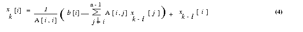

hyPACK-2013 Mode 1 : MPI 1.X Matrix System of Linear Eqs.- MPI Lib. Calls
|
Module 5 : Programming Using MPI 1.X Implementing Solution of matrix system
of linear equations Algorithms
that support MPI library.
|
Example 6.1
|
MPI program to implement the the soluiton of
Matrix system of Linear Equations AX=b by Jacobi Method (Iterative Method)
|
Example 6.2
|
MPI program to implement the the soluiton of
Matrix system of Linear Equations AX=b by Gauss Elimination method (Direct Method).
|
Example 6.3
|
MPI program to implement the the soluiton of
Matrix system of Linear Equations AX=b by Conjugate Gradient method (Iterative Method).
|
Example 6.4
|
MPI program for implementation of solution of matrix
system of linear equations by Gauss seidel Method (iterative Method) (Assignment)
|
| |
|
(Source - References :
Books
Multi-threading
-
[MC-MPI-02], [MCMPI-06], [MCMPI-07], [MCMPI-09], [MC-MPI10], [MCMPI-11],
[MCMTh-12],[MCBW-44], [MCOMP-01])
|
An Overview of direct and iterative solution of matrix system of linear equations
|
The system of linear equations [A]{x} = {b} is given by
ao,o x o + ao,1
x1 + ...+ ao, n-1 xn-1
= bo ,
a1,o xo + a1,1
x1 + ...+ a1, n-1 x
n-1 = b1 ,
...........................................................................
...........................................................................
...........................................................................
an-1,o x0
+ an-1,1 x1
+ ...+ an-1, n-1 x n-1
= bn-1 .
In matrix notation, this system of linear equation is written as [A]{x}={b}
where A[i, j] = ai, j , b is
an n x 1 vector [bo,b1,...,bn-1]T,
and is the desired solution vector [xo,x1,...,xn-1]T.
We will make all subsequent references to ai, j by A[i,j] and xi
by x[i ]. The matrix A is partitioned using block row-wise striping. Each process has n/p
rows of the matrix A and the vector b. Since only process with rank 0 performs input and ouut,
the matrix and vector must be distributed to the other processes.
The direct and iterative methods for the solution of system of equations such as Jacobi method, Gaussian Elimination method,
Conjugate gradient method have been widely used and the parallel programs are given below to execute on message
passing clusters. Iterative methods are techniques to solve systems of equations of the form [A]{x}={b} that generate
a sequence of approximations to the solution vector x. In each iteration, the coefficient matrix A is
used to perform a matrix-vector multiplication. The number of iterations required to solve a system of
equations with a desired precision is usually data dependent; hence, the number of iterations is not
known prior to executing the algorithm.

|
Objective
Write a parallel MPI program, for solving system of linear equations [A]{x} = {b} on a p processor Parallel Processing Platform
using Jacobi method
Description
The Jacobi iterative method is one of the simplest iterative techniques to solve system of linear equations.
The ith equation of a system of linear equations [A]{x}={b} is

If all the diagonal elements of A are nonzero (or are made nonzero
by permuting the rows and columns of A), we can rewrite equation (1)

The Jacobi method starts with an initial guess x0 for
the solution vector x. This initial vector x0
is used in the right-hand side of equation (2) to arrive at the next approximation
x1 to the solution vector. The vector x1
is then used in the right hand side of equation (2), and the process continues
until a close enough approximation to the actual solution is found. A typical
iteration step in the Jacobi method is
We now express the iteration step of equation 3 in terms of residual rk.
Equation (3) can be rewritten as

Each process computes n/p values of the vector x in each iteration. These values are
gathered by all the processes and each process tests for convergence. If the values have been
computed upto a certain accuracy the iterations are stopped otherwise the processes use
these values in the next iterations to compute a new set of values.
Input
The input data should be given in the following format
Assume that the real matrix is of size m x n
and the real vector is of size n . Also the number of rows
m should be greater than or equal to number of processes p.
Process with rank 0 reads the input matrix A and the
vector x Format for the input files are given below.
Input file 1
The input file for the matrix should strictly adhere to the following
format.
#Line 1 : Number of Rows (m), Number of columns(n).
#Line 2 : (data) (in row-major order. This means
that the data of second row follows that of the first and so on.)
A sample input file for the matrix (8 x 8) is given below
8 8
61.0 2.0 3.0
4.0 6.0 8.0
9.0 2.0
2.0 84.0 6.0
4.0 3.0 2.0
8.0 7.0
3.0 6.0 68.0
2.0 4.0 3.0
9.0 1.0
4.0 4.0 2.0
59.0 6.0 4.0
3.0 8.0
6.0 3.0 4.0
6.0 93.0 8.0 3.0
1.0
8.0 2.0 3.0
4.0 8.0 98.0 3.0
1.0
9.0 8.0 9.0
3.0 3.0 3.0 85.0
7.0
2.0 7.0 1.0
8.0 1.0 1.0
7.0 98.0
Input file 2
The input file for the vector should strictly adhere to the following
format.
#Line 1 : Size of the vector (n)
#Line 2 : (data)
A sample input file for the vector (8 x 1) is given below
8
95.0 116.0 96.0 90.0 124.0 127.0
127.0 125.0
Output
Process 0 will print the results of the solution x of matrix system
B>Ax = b.
1.0 1.0 1.0
1.0 1.0 1.0 1.0
1.0
|
Objective
Write a MPI program to solve the system of linear equations [A]{x} = {b}
using Gaussian elimination without pivoting and a back-substitution. Assume that A is symmetric
positive definite dense matrix of size n. You may assume that n is evenly
divisible by p.
Description
The serial Gaussian elimination algorithm has three nested loops. Several
variations of the algorithm exist, depending on the order in which the
loops are arranged. The function Gaussian elimination is given below.
void Gaussian_Elimination
(float A[ ][ ], float b[ ], float y[ ], int n)
{i,j,k;
for (k = 0; k < n; k++)
{
for (j = k+1; j < n; j++)
A[k][j] = A[k][j] /
A[k][k]
/* Assume A[k][k] not equal to 0 */
y[k]= b[k] / A[k][k];
A[k][k] = 1;
for (i= k+1; i < n; i++)
{
for (j = k+1; j < n; j++)
A[i][j] = A[i][j] - A[i][k]
* A[k][j];
b[i] = b[i] - A[i][k]* y[k];
>
A[i][k] = 0;
}
}
}
Program 1 : A serial gaussian elimination algorithm that converts the system
of linear equations Ax = b to a unit upper-triangular system Ux = y.
The matrix U occupies the upper-triangular locations of A.
Program shows one variation of Gaussian elimination, which we will adopt for parallel implementation
in the remainder of this section. This program converts a system of linear equations
[A]{x}={b} to a unit upper-triangular system [U]{x}={y}.
We assume that the matrix U shares storage with A and overwrites
the upper-triangular portion of A. The element A[k,
j] computed on line 6 of above program is actually U[k,
j]. Similarly, the element A[k, k] equated
to 1 on line 8 is U[k, k]. The above program assumes that
A[k, k] not equal to 0 when it is used as a divisor on lines 6 and 7.
A typical computation of Gauss elimination procedure in the kth iteration of
the outer loop is shown in the Figure 17.
Figure 17. A typical computation in Gaussian elimination in the kth iteration
Gaussian elimination involves approximately n2/2 divisions
(line 6) and approximately n3/3 - n2/2
subtractions and multiplications (line 12). We assume that scalar arithmetic
operations takes unit time. Thus, the total sequential run time of the
procedure is approximately 2n3/3 for large n .
Parallel implementation with striped partitioning
Parallel formulations of the classical Gaussian elimination method for upper-triangularization
is discussed.
We describe a straight-forward Gaussian elimination algorithm assuming that the coefficient matrix
is non singular and symmetric positive definite.
We consider a parallel implementation of program 1 in which the coefficient matrix is rowwise
strip-partitioned among the processes. A parallel implementation of this algorithm with
column-wise striping is very similar, and its details can be worked out based on the implementation
using rowwise striping.
Figure 18 Gaussian elimination steps during the iteration
corresponding to k = 3 for an 8 X 8 matrix and striped
rowwise on 8 processors.
Figure 18 illustrates the computation and communication that takes place in the iteration of the
outer loop when k = 3. We firstconsider the case in which one row is assigned to each process,
and the n x n coefficient matrix A is striped among n processeslabeled from
P0 to Pn-1. In this mapping,
process Pi initially stores elements
A[i, j] for 0 <=j <= n
Figure 18(a) illustrates this mapping of the matrix onto the
processors for n = 8. Program 1 and Figure 18 show that A[k, k+1], A[k,
k+2],..., A[k, n-1] are divided by A[k,
k] (line 6) at the beginning of the kth iteration.
All matrix elements participating in this operation lie on the same process (shown by the shaded
portion of the matrix in Figure 18(b). So this step does not require any communication. In the second
computation step of the algorithm (the elimination step of line 12), the modified (after division)
elements of the kth row are used by all other rows of the active part of the
kth row to the processes storing rows k+1 to n-1.
Finally, the computation A[i, j] = A[i, j] - A[i,
k] - A[k, j] take place in the remaining active portion of the matrix,
which is shown shaded in Figure 18(a).
This example was chosen not because it illustrates the best way to parallelize this particular
numerical computation (it doesn't), because it illustrates the basic MPI send and receive
operations in the context of fundamental type of parallel algorithm, applicable in many situations.
Input
The input should be in following format.
Assume that the real matrix is of size m x n
and the real vector is of size n . Also the number of rows
m should be greater than or equal to number of processes p.
Process with rank 0 reads the input matrix A and the
vector x. Format for the input files are given below.
Input file 1
The input file for the matrix should strictly adhere to the following format.
#Line 1 : Number of Rows (m), Number of columns(n).
#Line 2 : (data) (in row-major order. This means that the data of second row
follows that of the first and so on.)
A sample input file for the matrix (8 x 8) is given below
16 16
61.0 2.0 3.0
4.0 6.0 8.0
9.0 2.0
2.0 84.0 6.0
4.0 3.0 2.0
8.0 7.0
3.0 6.0 68.0
2.0 4.0 3.0
9.0 1.0
4.0 4.0 2.0
59.0 6.0 4.0
3.0 8.0
6.0 3.0 4.0
6.0 93.0 8.0 3.0
1.0
8.0 2.0 3.0
4.0 8.0 98.0 3.0
1.0
9.0 8.0 9.0
3.0 3.0 3.0 85.0
7.0
2.0 7.0 1.0
8.0 1.0 1.0
7.0 98.0
Input file 2
The input file for the vector should strictly adhere to the following format.
#Line 1 : Size of the vector (n)
#Line 2 : (data)
A sample input file for the vector (8 x 1) is given below
8
95.0 116.0 96.0 90.0 124.0 127.0 127.0 125.0
Output
Process with rank 0 prints the results of the solution vector x of matrix system
Ax = b.
1.0 1.0 1.0 1.0 1.0 1.0 1.0 1.0
|
Objective
Parallel program implementaiton for Conjugate Gradient Method with
MPI library to solve the system of linear equations [A]{x}={b}.
Assume that A is symmetric positive definite matrix.
Description
Description of conjugate gradient method :
The conjugate gradient (CG) method is an example of minimizing
method. A real n x n matrix A is positive definite if xT A x > {0}
for any n x 1 real, nonzero vector x. For a symmetric positive definite matrix A,
the unique vector x that minimizes the quadratic functional
f(x) = (1/2)xTAx-xTb
is the solution to the system Ax = b, here x and b
are n x 1 vectors. It is not particularly relevant
when n is very large, since the conjugating time for that number of iterations
is usually prohibitive and the property does not hold in presence of rounding
errors. The reason is that the gradient of functional f (x) is
Ax - b, which is zero when f (x) is
minimum. The gradient of a function is a n x 1 vector. We explain
some important steps in the algorithm. An iteration of a minimization method
is of the form
xk+1 = xk
+ taukdk
.............................. (1)
where tauk is a scalar step size and dkis
the direction vector, dk is a descent direction for f
at x. We now consider the problem of determining tauk,
given xk and dk, so that f(x)
is minimized on the line x = xk + tauk
dk, for tauk. The function f(xk+
tau dk) is quadratic in tau, and its minimization
leads to the condition
tau k = gkTgk
/ dkTAdk ,
...................... (2)
where gk=Axk - b is
the gradient (residue) vector after k iterations. The residual
need not be computed explicitly in each iteration because it can be computed
incrementally by using its value from the previous iteration. In the (k+1)th
iteration, the residual gk+1 can be expressed
as follows:
gk+1 = Axk+1
- b
= A(xk+ tauk
dk) - b
= Axk- b + tauk
Adk
= gk + tauk Adk
...........................(3)
Thus, the only matrix-vector product computed in each iteration is Adk,
which is already required to compute tauk in the
equation (2). If A is a symmetric positive definite matrix and d1,
d2,..., dn are direction vectors
that are conjugate with respect to A (that is, diT
Adj=0 for all 0<n, j<=n, i!=j),
then xk+1 in the Equation (1) converges to the solution
of Ax = bin at most n
iterations, assuming no rounding errors.
In practice, however, the number of iterations that yields an acceptable approximation to the solution is
much smaller than n. It also makes the gradient
at xk+1 orthogonal to search direction, i.e dkT
gk+1 = 0. Now we suppose that the search directions
are determined by an iteration of the form
dk+1 = -gk+1+ betak
dk ........................(4)
where d0 = -g0 and beta0,
beta1 , ...... remain to be determined. We find the new search
direction in the plane spanned by the gradient at the most recent
point and previous search direction. The parameter betak+1is determined by following
equation
Betak+1 = gTk+1Adk/
dTkAdk ...................(5)
And, one can derive orthogonality relations
gTkg l= 0 (l !=
k);
dTkAdl = 0 (l !=k)
The derivation of the above equation (5) and orthogonality relations
is beyond the scope of this document. For details please refer [ ]. Using
equation (3) and orthogonality relations, the equation (5) can be
further reduced to
Betak+1 = gTk+1gk+1/
gTkgk< .........................(6)
The above equations (1) to (6) lead to CG algorithm. The algorithm
terminates when the square of the Euclidean vector norm of gradient (residual)
falls below a predetermined tolerance value. Although all of the
versions of the conjugate gradient method obtained by combining the formulas
for gk, Betak, and tauk
in various ways are mathematically equivalent, their computer implementation
is not. The following version is compared with respect to computational
labor, storage requirements, and accuracy. The following sequence of steps
are widely accepted.
1. tau k =
gkTgk /
dkTAdk
2. xk+1 =
xk + tauk dk
3. gk+1 =
gk + tauk Adk
4. Betak+1 = gTk+1gk+1/
gTkgk
5. dk+1 = -gk+1 +
Betak dk
where k = 0, 1, 2, .......... Initially we choose x0,
calculate g0 = Ax0 - b , and put d0= -g0
The computer implementation of this algorithm is explained as follows :
void CongugateGradient(float
x0 [ ], float b [ ], float d)
{
float g, Delta0, Delta1, beta;
float temp, tau;
int iteration;
iteration = 0;
x = x0;
g = b;
g = A x - g;
Delta0 = gT * g;
if ( Delta0 <= EPSILON)
return;
d = -g;
do {
iteration = iteration + 1;
temp = A * d;
tau = Delta0 / dT * temp;
x = x + tau * d;
g = g + tau * temp;
Delta1 = gT * g;
if ( Delta1 <= EPSILON )
break;
beta = Delta1 / Delta0;
Delta0 = Delta1;
d = -g + beta * d;
}
while(Delta0 > EPSILON && Iteration < MAX_ITERATIONS);
return;
Regarding one-dimensional arrays of size n x 1 are required for
temp, g, x, d. The storage requirement for matrix. A is depends upon the structure
( dense, band, sparse ) of the matrix.The two dimensional n x n array is the
simplest structure to store matrix A. For large sparse matrix A this structure wastes a large amount
of storage space, for such matrix A suitable storage scheme should be
used.
The preconditioned conjugate gradient algorithm
Let C be a positive definite matrix factored in the form C = E ET,
and let the quadratic functional
f(x) = (1/2)xTAx - xTb + C ,
We define second quadratic functional g(y) by the transformation y = ETx,
g(x) = g(E-Ty) = (1/2)yTA*y
- yTb * + C*
where A * = E-1AE-T, b* =
E-1b, C* = C.
Here, A* is symmetric and positive definite. The similarity transformation
E-TA*ET = E-TE-1A
= C-1A
reveals that A* and A have same eigen values. If C can be found
such that the condition number of the matrix A* is less than
the condition number of the matrix A, then the rate of convergence of the
preconditioned method is better than that of conjugate gradient method.
We call C the preconditioning matrix, A* the preconditioned
matrix, We assume that the matrix C = EET is positive definite,
since E is nonsingular by assumption. If the coefficient matrix A has l
distinct eigen values, the CG algorithm converges to the solution
of the system Ax = b in at most l iterations
(assuming no rounding errors). Therefore, if A has many distinct eigen
values that vary widely in magnitude, the CG algorithm may require a large
number of iterations to converge to an acceptable approximation to the
solution.
The speed of convergence of the CG algorithm can be increased
by preconditioning A with the congruence transformation A*
= E-1AE-T where E is a nonsingular
matrix. E is chosen such that A* has fewer distinct eigen values
than A. The CG algorithm is then used to solve A* y =b*,
where x =(ET)-1y . The resulting
algorithm is called the preconditioned conjugate gradient (PCG)
algorithm. The step performed in each iteration of the preconditioned
conjugate gradient algorithm are as follows
1. tau k =
gkThk /
dkTAdk
2. xk+1
= xk + tauk dk
3. gk+1 =
gk + tauk Adk
4. hk+1 =
C-1gk+1
5. &nsbp; betak+1 = gTk+1hk+1/
gTkhk
6. dk+1 =
-hk+1 + betak+1dk
where k = 0, 1, 2, .......... Initially we choose x0,
calculate g0 = Ax0 - b, h0=
C-1g0 and d0 = -h0.
The multiplication by C-1 in step (4) is to be interpreted as solving a system of equations
with coefficient matrix C. A source of preconditioning matrices is the class
of stationary iterative methods for solving the system
Ax* = b.
Parallel implementations of the PCG algorithm
The parallel conjugate gradient algorithm involves the following
type of computations and communications
Partitioning of a matrix : The matrix A is obtained by discretization
of partial differential equations by finite element, or finite difference
method. In such cases, the matrix is either sparse or banded. Consequently,
the partition of the matrix onto p processes play a vital
role for performance. For, simplicity , we assume that A is symmetric
positive definite and is rowwise block-striped partitioned.
Scalar Multiplication of a vector and addition of vectors :
Each of these computations can be performed sequentially regardless
of the preconditioner and the type of coefficient matrix. If all vectors
are distributed identically among the processes, these steps require no
communication in a parallel implementation.
Vector inner products :
In some situations, partial vectors are available on each processes.
MPI Collective library calls are necessary to perform vector inner products
If the parallel computer supports fast reduction operations, such as optimized
MPI, then the communication time for the inner-product calculations can
be made minimum.
Matrix-vector multiplication :
The computation and the communication cost of the matrix-vector
multiplication; depends on the structure of the matrix A. The
parallel implementation of the PCG algorithm for three cases one
in which A is a block-tridiagonal matrix of the type, two in
which it is banded unstructured sparse matrix, and three in which the matrix
is sparse give different performance on parallel computers. Various
parts of the algorithm in each of the three cases dominate in terms of
communication overheads.
Solving the preconditioned system :
The PCG algorithm solves system of linear equations in each
iteration The preconditioner C is chosen so that solving the system modified
system is in expensive compared to solving the original system of
equations Ax = b. Nevertheless, preconditioning increases
the amount of computation in each iteration. For good preconditioners,
however, the increase is compensated by a reduction in the number of iterations
required to achieve acceptable convergence. The computation and the
communication requirements of this step depends on the type
of preconditioner used. preconditioning method such as diagonal preconditioning,
in which the preconditioning matrix C has nonzero elements only
along the principle diagonal does not involve any communication Also,
Incomplete Cholesky (IC) preconditioning, in which C is based on incomplete
Cholesky factorization of A and it may involve different computations and
communications in parallel implementation.
The convergence of CG method iterations performed by checking the error
criteria i.e. eulicidean norm of the residual vector should be less than
prescribed tolerance. This convergence check involves gathering of real
value from all processes, which may be very costly operation.
We consider parallel implementations of the PCG algorithm using
diagonal preconditioner for dense coefficient matrix type. As we
will see, if C is a diagonal preconditioner, then solving the modified
system does not require any interprocessor communication. Hence,
the communication time in a CG iteration with diagonal preconditioning
is the same as that in an iteration of the unpreconditioned algorithm.
Thus the operations that involve any
communication overheads are computation of inner products, matrix-vector
multiplication and, in case of IC preconditioner solving the
system.
Input
The input should be in following format.
Assume that the real matrix is of size m x n
and the real vector is of size n Also the number of rows
m should be greater than or equal to number of processes p.
Process with rank 0 reads the input matrix A and the
vector x Format for the input files are given below.
Input file 1
The input file for the matrix should strictly adhere to the following
format.
#Line 1 : Number of Rows (m), Number of columns(n).
#Line 2 : (data) (in row-major order. This means
that the data of second row follows that of the first and so on.)
A sample input file for the matrix (8 x 8) is given below
8 8
61.0 2.0 3.0
4.0 6.0 8.0
9.0 2.0
2.0 84.0 6.0
4.0 3.0 2.0
8.0 7.0
3.0 6.0 68.0
2.0 4.0 3.0
9.0 1.0
4.0 4.0 2.0
59.0 6.0 4.0
3.0 8.0
6.0 3.0 4.0
6.0 93.0 8.0 3.0
1.0
8.0 2.0 3.0
4.0 8.0 98.0 3.0
1.0
9.0 8.0 9.0
3.0 3.0 3.0 85.0
7.0
2.0 7.0 1.0
8.0 1.0 1.0
7.0 98.0
Input file 2
The input file for the vector should strictly adhere to the following format.
#Line 1 : Size of the vector (n)
#Line 2 : (data)
A sample input file for the vector (8 x 1) is given below
8
95.0 116.0 96.0 90.0 124.0 127.0 127.0 125.0
Output
Process with rank 0 prints the results of the solution x of linear system of matrix equations
Ax = b.
1.0 1.0 1.0 1.0 1.0 1.0 1.0 1.0
|
 Example 6.4:
Example 6.4:
|
MPI implementation of Solution of linear system of equations Ax= by Gauss siedel method
|
Objective
Implement a simple parallel Gauss-Seidel method with MPI library
to solve the system of linear equations [A]{x} = {b}.
Assume that Ais symmetric positive definite matrix.
Background
Iterative methods are techniques to solve systems of equations of the
form [A]{x}={b} that generate a sequence of
approximations to the solution vector x. In each iteration, the
coefficient matrix A is used to perform a matrix-vector multiplication.
The number of iterations required to solve a system of equations with a
desired precision is usually data dependent; hence, the number of iterations
is not known prior to executing the algorithm. Therefore, we can analyze
the performance and scalability of a single iteration of an iterative method.
Iterative methods do not guarantee a solution for all systems of equations.
However, when they do yield a solution, they are usually less expensive
than direct methods for matrix factorization for large size of matrices.
Consider the large sparse system of linear equations of the form [A]{x}={b},
where A is a symmetric positive definite n x n matrix, x
is nx 1 vector and b is n x 1 vector. A real
n x n matrix is positive definite if xT [A]{x}>
{0} for any real nonzero vector x.
We first consider serial simple jacobi iterative technique to solve matrix system of
linear equations [A]{x}={b}.
Jacobi iterative method
The Jacobi iterative method is one of the simplest iterative techniques.
The ith equation of a system of linear equations [A]{x}={b} is

If all the diagonal elements of A are nonzero (or are made nonzero
by permuting the rows and columns of A), we can rewrite equation
(1) as :

The Jacobi method starts with an initial guess x0 for
the solution vector x. This initial vector x0
is used in the right-hand side of equation (2) to arrive at the next approximation
x1 to the solution vector. The vector x1
is then used in the right hand side of equation (2), and the process continues
until a close enough approximation to the actual solution is found. A typical
iteration step in the Jacobi method is

We know express the iteration step of equation 3 in terms of residual
rk. Equation 3 can be rewritten as

The gauss-seidel method
An iteration of the Jacobi method is based on equation (3). During the
kth iteration of Jacobi algorithm to solve an
n x n system, the step of equation (3) is performed to compute each xk[i]
for 0<=i<n.
The computation of xk[i] uses the value of xk-
1[0], ... , xk-1[i-1],
xk-1[i+1],..., xk-1[n-1].
Assuming that the xk[i] values are
computed in increasing order of i, the values of xk[0],
... ,xk[i-1] have already been computed before
equation (3) is used to compute xk[i]. However,
the Jacobi algorithm uses xk-1[0], ...,xk-1[i-1]
form the previous iteration.
The Gauss-Seidel algorithm uses the most recent value of each variable, and as a result, often achieves
faster convergence than the Jacobi algorithm. The basic Gauss-Seidel iteration is given by
Parallel implementation
The Gauss-Seidel algorithm performs the basic iteration given by equation(5)
until satisfactory convergence is achieved. The test for convergence requires
an inner-product computation that involves global communication. However,
a convergence check need not be performed after each iteration. Given a
parallel architecture, the frequency of the convergence check can be chosen
to optimize the overall performance on that architecture. The issues in
parallelizing the inner-product computation are discussed. We concentrate
on performing the iteration step of equation in parallel.
From a preliminary glance at equation it might appear that computing
xk[0], xk[1], ... , xk[n-1]
in the kth iteration is completely sequential because
xk[i] cannot be computed until xk[i-1]
has been computed for 0<=i<n. This is indeed the case if the
coefficient matrix A is dense. However, if A is sparse, the
computation of xk[i] need not wait until xk[0]
, ... ,xk[i-1] have all been computed. A majority
of elements in the sparse matrix A are zero. If A[i, j]
is zero, then xk[i] on the left-hand side of equation
(4) does not depend upon xk[j]. Thus, xk[i]
can be computed as soon as all xk[j] have been
computed such that j<i and A[i, j] not equal to
0. At any time, all xk[i] for which this condition
is true can be computed in parallel.
Since the computation of xk[i] depends only
on the nonzero elements of A[i, j] (with j>i) in the
coefficient matrix, the degree of parallelism in Gauss-Seidel method is
a function of the sparsity pattern of the lower-triangular part of A.
For example, consider the block-tridiagonal matrix. Such a matrix results
for a finite difference discretization with a natural ordering of grid
points. In the
square
 grid, except for the points on the left periphery, every point i
has i-1 as its neighbor, Therefore except in the rows corresponding
to the grid points on the left periphery, A[i, i-1]
0. As a result, for all but square
values of i, the computation of xk[i] has to wait
until xk[i-1] has been computed. Hence, natural
ordering is not suitable for a parallel implementation of Gauss-Seidel
algorithm. It can be shown that each Gauss-Seidel iteration on an
n x n block-tridiagonal matrix of the form shown in Figure 1 takes at least O
()
time regardless of the number of processors used.
grid, except for the points on the left periphery, every point i
has i-1 as its neighbor, Therefore except in the rows corresponding
to the grid points on the left periphery, A[i, i-1]
0. As a result, for all but square
values of i, the computation of xk[i] has to wait
until xk[i-1] has been computed. Hence, natural
ordering is not suitable for a parallel implementation of Gauss-Seidel
algorithm. It can be shown that each Gauss-Seidel iteration on an
n x n block-tridiagonal matrix of the form shown in Figure 1 takes at least O
()
time regardless of the number of processors used.

Figure 1. A 16 x 16 block-tridiagonal matrix. The nonzero elements are represented
by the symbol x.
The order in which the grid points in a discretized domain are numbered
determines the order of the rows and columns in the coefficient matrix,
and hence, the location of its nonzero elements. The degree of parallelism
in the Gauss-Seidel algorithm for a given grid is also sensitive to this
ordering. However, given enough processors, an ordering more amenable to
parallelization is likely to yield a better overall performance, unless
it results in much worse convergence.
Red-black ordering
We now introduce a numbering scheme for a finite difference grid so
that the resulting coefficient matrix permits a high degree of parallelism
in a Gauss- Seidel iteration. We will later extend this scheme to
deal with sparse matrices other than those resulting from a finite difference
discretization. Figure 2 illustrates this ordering, which is known as red-black
ordering. In red-black ordering, alternate grid points in each
row and column are colored red, and the remaining points are colored black.
For a uniform two-dimentional grid in which each point has a maximum of
four neighbors, this ensures that no two directly- connected grid points
have the same color. After assigning colors to the grid points, all red
points are numbered first in natural order, leaving out the black points.
This is followed by numbering all the black points in natural order. If
the grid has a total of n points and n is even, the red points
are numbered form 0 to n/2-1 and the black points are numbered from
n/2 to n-1
Figure 2. A partitioning among four processors of a 4 x 4 finite difference
grid with red-black ordering.
|
Figure 2(b) shows the sparse matrix resulting from a 4 x 4 grid of
Figure 2(a). In the coefficient matrix, the first n/2 rows correspond
to the red points, and the last n/2 correspond to the black points
in the grid. Since red points have only black neighbors and vice-versa,
the first n/2 rows have nondiagonal nonzero elements in only the
last n/2 columns, and the last n/2 rows have nondiagonal
nonzero elements in only the first n/2 columns
Consider a parallel implementation of the Gauss-Seidel method on a two-dimentional
mesh of processors. The grid is partitioned among the processors of the
mesh in a block-checkerboard fashion. Figure 2(a) shows the allocation
of grid points and the rows of the coefficient matrix among four processors.
With red-black ordering, each iteration of the Gauss-Seidel algorithm
is performed in two phases. In the kth iteration, first,
xk[0], xk[1],..., xk[n/2-1]
are computed in parallel. Each of these variables correspond to red points,
and uses values of the variables corresponding to its black neighbors form
the previous iteration. To perform this compuatation, each processor sends
the variable corresponding to the black points lying at each of its four
partition boundaries to the respective neighboring processors. A typical
processor has four boundaries with square
 points on each boundary. Half of these points are red and the other half
are black. Therefore, the communication time of the first phase is
,
which is equal to
.
In the second phase, xk[n/2], xk[n/2+1],...,
xk[n-1] are computed in parallel. Each of these
variables use the values of the variables corresponding to the red neighbors
that were computed in the first phase of the kth iteration. This requires
an exchange of all the
variables
corresponding to the red points at each of the four partition boundaries.
As in the first phase, the communication in the second phase takes
time.
points on each boundary. Half of these points are red and the other half
are black. Therefore, the communication time of the first phase is
,
which is equal to
.
In the second phase, xk[n/2], xk[n/2+1],...,
xk[n-1] are computed in parallel. Each of these
variables use the values of the variables corresponding to the red neighbors
that were computed in the first phase of the kth iteration. This requires
an exchange of all the
variables
corresponding to the red points at each of the four partition boundaries.
As in the first phase, the communication in the second phase takes
time.
Figure 3. Multicolored ordering of a finite element graph using four colors.
Each evaluation of equation for the coefficient matrix resulting form
a grid of the form shown in Figure 3 requires at most four multiplications,
four substractions, and one division. The number of multiplications and
substactions is at most four because there are at most four nondiagonal
nonzero elements in each row of A-one corresponding to each of the
four neighbors of a point in the grid. These operations are performed once
for each variable in every iteration. Assuming that this constant amount
of computation per grid point (or per row of the coefficient matrix) takes
time tc , the total execution time per iteration is
Tp = tcn/p + 8ts + 4tw
The above equation does not include the time spent in testing for convergence,
which depends on how and with what frequency the convergence test is performed.
Input
There will an input file called data which your program will read. This
requires that in your code process 0 will read the data from a data
file. The data file format is described as the follows: Line one consists
of an integer n which represents the number of rows and columns
in the square matrix. Line 2 and the next n lines contain single
rows of the matrix, with each number separated by at least one blank space.
The next n lines contain single elements of the n x 1
vector. For example, the 8 x 8 matrix has 64 elements and the 8 x 1
vector has 8 elements as explained below.
8
61.0 2.0 3.0
1.0 6.0 8.0
9.0 2.0
2.0 84.0 6.0
4.0 3.0 2.0
8.0 7.0
3.0 7.0 68.0
2.0 4.0 3.0
9.0 1.0
4.0 6.0 9.0
59.0 6.0 4.0
3.0 8.0
6.0 8.0 2.0
8.0 93.0 8.0 3.0
1.0
7.0 4.0 3.0
9.0 1.0 98.0 3.0
1.0
4.0 2.0 8.0
4.0 3.0 2.0 85.0
7.0
2.0 8.0 8.0
1.0 2.0 5.0
6.0 98.0
10.0 50.1 72.5 43.0 10.0 52.1 74.5 58.1
Output
Process with rank 0 will output the results of the solution x of [A]
{x}={b} with one vector element per line.
|
| |
|